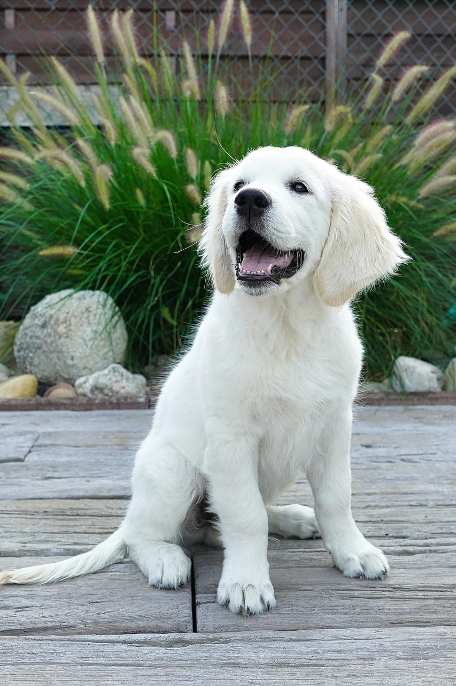
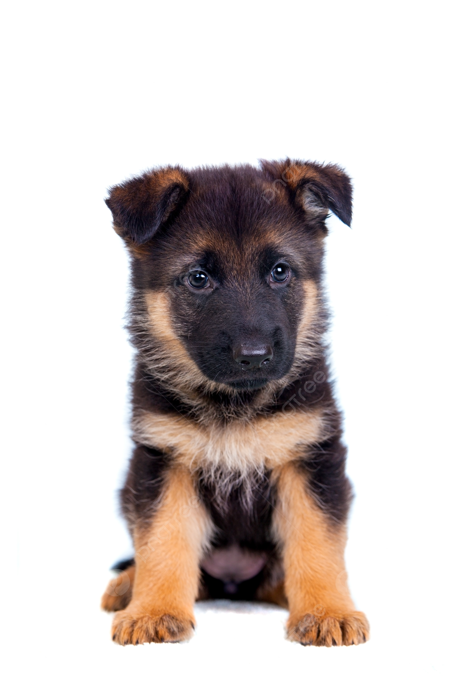

Filhotes de cachorro são cachorros pequenininhos.

| Imagem | Raça | Altura média | Pelagem comum |
|---|---|---|---|
 |
Pastor alemão | 55–65 cm | Preta/castanha |
| Golden retriever | 51–61 cm | Dourada | |
| Pinscher | 25–30 cm | Preta/castanha | |
| Chow-chow | 46–56 cm | Dourada | |
| Labrador retriever | 54–65 cm | Branca |